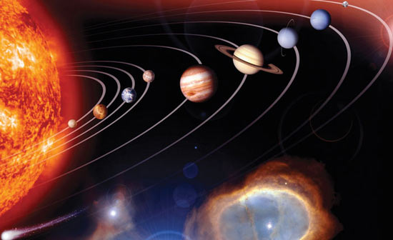

Tiếp theo các tập sách Cuộc thử thách trí tuệ, Thực nghiệm cuối cùng, Máy thời gian, chúng tôi giới thiệu với bạn đọc tác phẩm Nhật ký vũ trụ của Ion Lặng Lẽ của Xtanixlap Lem, nhà văn Ba Lan chuyên viết truyện tưởng tượng khoa học nổi tiếng thế giới.
Cũng như các tác phẩm chính khác của Lem - Địa đàng, Soliaris, Bất khả chiến thắng..., Nhật ký vũ trụ của Ion Lặng Lẽ đề cập đến những vấn đề cấp thiết của thời đại chúng ta, thông qua các dự đoán khoa học táo bạo và nội dung triết lý sâu sắc. Tuy nhiên, về hình thức, Nhật ký vũ trụ của Ion Lặng Lẽ là một tác phẩm hết sức độc đáo, được viết theo thể du ký, vừa mang yếu tố hài, vừa mang yếu tố viễn tưởng khoa học. Bằng trí tưởng tượng vô cùng phong phú, dựa trên cơ sở những hiểu biết về khoa học kỹ thuật và văn hóa xã hội hiện tại, tác giả dẫn dắt chúng ta theo các chuyến bay của Ion Lặng Lẽ đến với các nền văn minh khác nhau trong vũ trụ. Là sản phẩm của trí tưởng tượng không biết đâu là cùng của tác giả, các thế giới được phản ánh đó thật muôn màu muôn vẻ, thậm chí còn có vẻ khó chấp nhận nữa, nhưng suy cho cùng thì đó đều là những hệ quy chiếu giúp chúng ta nhìn nhận lại nền văn minh Trái Đất một cách tỉnh táo và đúng mực hơn. Cũng vậy, những tình huống hài hước được tạo ra trong các chuyến bay của Ion Lặng Lẽ không phải chỉ nhằm mục đích giải trí đơn thuần, mà bao giờ cũng gắn liền với những hiện tượng xã hội và các biểu hiện tâm lý không lấy gì làm hay hớm nhưng lại khá phổ biến trong con người chúng ta, để qua đó phê phán và cảnh báo những thói hư tật xấu trong đời sống thường ngày (thói đùn đẩy việc, sự lãng phí thời gian vào các cuộc họp hành vô bổ, chủ nghĩa giáo điều trong khoa học, tệ quan liêu, thói nệ sách vở v.v...). Một vấn đề lớn khác mà tác giả rất quan tâm, đó là tệ nạn sử dụng và khai thác bừa bãi hành tinh chúng ta, mà kết quả tất yếu là sự hủy hoại và ô nhiễm môi trường ngày một trầm trọng, được đề cập đến với một mối lo ngại xác đáng trong "Bức thư ngỏ của Ion Lặng Lẽ". Chỉ riêng với phần này, tác giả đã tỏ ra là một nhà sinh thái học đi trước thời đại (nên nhớ là cuốn sách được viết ra từ năm 1957).
Nhật ký vũ trụ của Ion Lặng Lẽ, ngoài "Lời nói đầu" và "Bức thư ngỏ của Ion Lặng Lẽ", bao gồm cả thảy sáu cuộc phiêu lưu khác nhau của Ion Lặng Lẽ trong vũ trụ. Các cuộc phiêu lưu đó có thể nói là hoàn toàn độc lập đối với nhau, trong đó "Cuộc phiêu lưu thứ hai mươi tám" là một chương khá rắc rối, tác giả kể về lai lịch của dòng họ Lặng Lẽ với rất nhiều chi tiết khó theo dõi. Xét thấy đó là những vấn đề không thật phù hợp với trình độ bạn đọc phổ thông, nên chúng tôi mạn phép không giới thiệu trong lần xuất bản này.
Rất mong được các bạn cho ý kiến đóng góp.
NHÀ XUẤT BẢN KHOA HỌC VÀ KỸ THUẬT